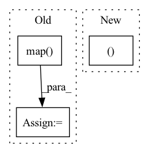

Pattern ID :18841
Before Change
preprocess_input_fn = get_preprocess_input_fn(self._config, self._is_train)
preprocess_pipeline = lambda record: preprocess_input_fn(decoder_fn(record))
dataset = dataset.map( preprocess_pipeline, num_parallel_calls=self._num_preprocess_workers)
dataset = dataset.batch(self.global_batch_size, drop_remainder=True)
dataset = dataset.prefetch(tf.data.experimental.AUTOTUNE)
return datasetAfter Change
dataset = dataset.repeat()
dataset = dataset.shuffle(self._shuffle_buffer_size)
tfds_decoder, preprocess_input_fn = get_preprocess_input_fn(self._config, self._is_train)
if self._dataset_type == "tfrecords":
decoder_fn = partial(self._dataset_loader.decoder, include_mask=self._include_mask)In pattern: SUPERPATTERN
Frequency: 4
Non-data size: 3
Instances Fragment ID: 61116948
Project Name: openvinotoolkit/nncf
Commit Name: 1e5f506a54908a0a4256e592b2d4c881106236b2
Time: 2021-04-03
Author: evgeny.tsykunov@intel.com
File Name: beta/examples/tensorflow/common/object_detection/datasets/builder.py
M Class Name: COCODatasetBuilder
N Class Name: COCODatasetBuilder
M Method Name: _pipeline(2)
N Method Name: _pipeline(2)
M Parent Class: BaseDatasetBuilder
N Parent Class: BaseDatasetBuilder
M File Name: beta/examples/tensorflow/common/object_detection/datasets/builder.py
N File Name: beta/examples/tensorflow/common/object_detection/datasets/builder.py
M Start Line: 91
M End Line: 106
N Start Line: 56
N End Line: 69
Before Change
train = train.map(
lambda p: preprocess_function(p, tokenizer), batched=True
)
val = val.map( lambda p: preprocess_function(p, tokenizer), batched=True)
return train, val
After Change
@pytest.fixture
def data():
return RegressionDataset(), RegressionDataset()
@pytest.fixture
def model(): Fragment ID: 61116944
Project Name: iterative/dvclive
Commit Name: e670f3814784ea72f0e9436187ccbe4d38b4202a
Time: 2022-10-04
Author: daviddelaiglesiacastro@gmail.com
File Name: tests/test_huggingface.py
M Class Name: AnonimousClass
N Class Name: AnonimousClass
M Method Name: data(0)
N Method Name: data(1)
M Parent Class:
N Parent Class:
M File Name: tests/test_huggingface.py
N File Name: tests/test_huggingface.py
M Start Line: 41
M End Line: 50
N Start Line: 86
N End Line: 86
Before Change
new_col_name = node + "_Idx"
col_map[node] = new_col_name
// add new Idx to dataframe
df[new_col_name] = df[config["node_columns"][i]].map( dict[key])
// offset = len(dict[key]) //remove if doing hetero mapping where all types start from zero
t_renum = time.time()
print("Re-enumerated column map: ", col_map)
print("Time to renumerate", t_renum - t_load_data)After Change
// 2. Renumbering - generating node/edge ids starting from zero
print("Node renumbering")
// heterogeneous mapping where all types start from zero
mapping, col_map = tokenize_node_ids(df, config, homogeneous=False)
t_renum = time.time()
print("Time to renumerate", t_renum - t_load_data) Fragment ID: 61116941
Project Name: oap-project/cloudtik
Commit Name: dbf87797df081d065af5505a78544d5facbd4cdb
Time: 2023-06-21
Author: haifeng.chen@intel.com
File Name: python/cloudtik/runtime/ai/modeling/graph_modeling/graph_sage/modeling/build_graph.py
M Class Name: AnonimousClass
N Class Name: AnonimousClass
M Method Name: build_graph(4)
N Method Name: build_graph(4)
M Parent Class:
N Parent Class:
M File Name: python/cloudtik/runtime/ai/modeling/graph_modeling/graph_sage/modeling/build_graph.py
N File Name: python/cloudtik/runtime/ai/modeling/graph_modeling/graph_sage/modeling/build_graph.py
M Start Line: 26
M End Line: 50
N Start Line: 27
N End Line: 34
Before Change
df = pd.DataFrame(
data=breast_cancer.data, columns=breast_cancer.feature_names
)
df["class"] = pd.Categorical(
pd.Series(breast_cancer.target).map(
lambda x: breast_cancer.target_names[x]
)
)
// leverage the whylogs sub-context to generate a whylogs profile
profile = context.whylogs.profile_dataframe(df, dataset_name="input_data")After Change
context: StepContext,
) -> Output(data=pd.DataFrame, profile=DatasetProfile,):
Load the diabetes dataset.
X, y = datasets.load_diabetes(return_X_y=True, as_frame=True)
// merge X an y together
df = pd.merge(X, y, left_index=True, right_index=True) Fragment ID: 61116943
Project Name: maiot-io/zenml
Commit Name: 2d2ea2721bbf029871de5e8f2736149d9a320886
Time: 2022-01-21
Author: stefan@zenml.io
File Name: examples/whylogs/run.py
M Class Name: AnonimousClass
N Class Name: AnonimousClass
M Method Name: data_loader(1)
N Method Name: data_loader(1)
M Parent Class:
N Parent Class:
M File Name: examples/whylogs/run.py
N File Name: examples/whylogs/run.py
M Start Line: 60
M End Line: 69
N Start Line: 61
N End Line: 64